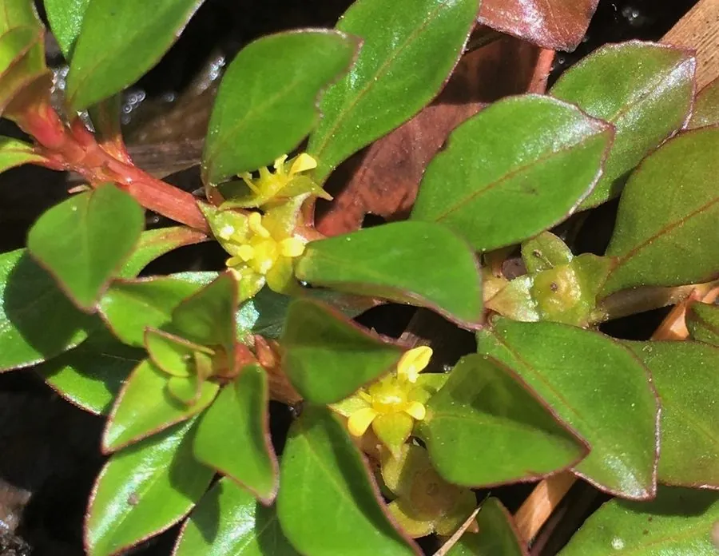

水生植物 · 植物界
水丁香 Ludwigia repens

柳叶菜科多年生水生草本，茎匍匐或直立、叶对生卵形，水下叶常呈红褐，是易养又艳丽的红色系水草。
- 分类
- 门被子植物门纲木兰纲目桃金娘目科柳叶菜科属丁香蓼属
- 栖息环境
- 沼泽、溪流边缘、池塘浅水与湿泥地，喜强光、适应力强
- 地理分布
- 原产北美东南部与中美洲，现世界各地水族箱与湿地景观栽培
- 保护级别
- 暂无评估；在部分引种地区生长旺盛
物种志
水丁香为柳叶菜科丁香蓼属多年生水生草本，茎匍匐或直立，长 20–60 厘米，节上生根。叶对生，卵形至椭圆形，长 2–5 厘米，全缘，水上叶绿色，水下叶在强光下呈红褐至橙红，叶背尤深。花单生于叶腋，花瓣 4 枚，黄色，花期 6–9 月；蒴果圆柱形。
水丁香原产北美洲东南部与中美洲的沼泽、溪流和池塘浅水，适宜水深 0–30 厘米，喜强光与温暖，对水质适应范围较宽，是红色系水草中最容易栽培的种类之一。它既能沉水生长，也能挺水形成匍匐草甸，强光与适量铁肥可使叶色更加红艳，弱光下则偏绿。茎段扦插极易成活，是新手入门红色水草的首选，也常用于水陆缸与池塘边缘绿化。
形态与习性
- 株高20–60 厘米，茎匍匐或直立
- 水深适宜水深 0–30 厘米，可挺水或沉水
- 水质适应软水至中等硬度，pH 6.0–7.5
- 花期6–9 月，叶腋开黄色四瓣小花
- 光照强光下叶色红褐，弱光偏绿
- 繁殖茎段扦插，节处生根迅速
趣味知识
- 水丁香是少数既能在水下生长、又能在湿地铺成草甸的红色水草。
- 它的水下叶在强光下呈红褐色，叶背颜色更深，弱光时则几乎全绿。
- 剪下的茎段插入底砂一周左右即可生根，是最容易繁殖的水草之一。
- 在北美原生地，它是蜻蜓幼虫与小鱼的重要隐蔽植物。